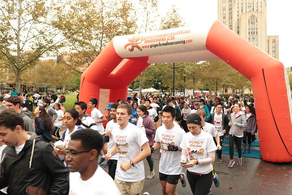
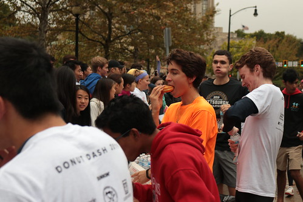
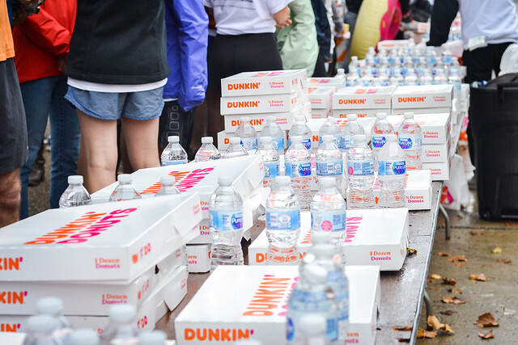
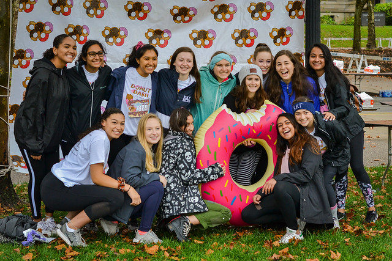

On the day of the race, 100s of people line up to test their
speed and eating prowress against the other competitors
For this assignment, I chose to focus on Pittsburgh Donut Dash. The theme will include images of the race and the purpose of the race, past results and donation totals, a way to sign up, and contact information. It will also include a brief description of the event and its purpose.
On the day of the race, 100s of people line up to test their
speed and eating prowress against the other competitors
Donut Dash is an annual event bringing the Pittsburgh community together to raise money for charity
The main event consists of a professionally timed race in which runners have to run a mile, eat 6 donuts, and then run another mile before finishing
 Almost every year a new top time emerges, with 11 minutes never being broken in the past, is this the year and are you the one to finally break that mark
Starting in 2009, Donut Dash has grown to a nationally recognized philanthropy event with sponser ranging from local companies to large conglomerate corporations
After signing up, Donut Dash provides a full raceday venue, unlimited donuts and water, and a fun environment for everyone
 Join the Thousands of people whoi have donated and/or participated in this event